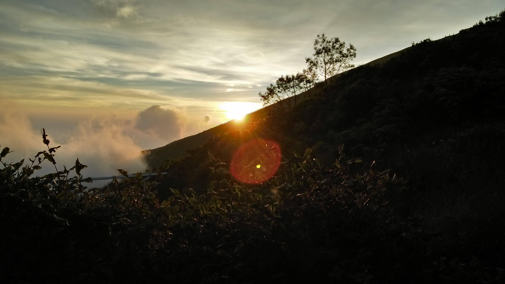
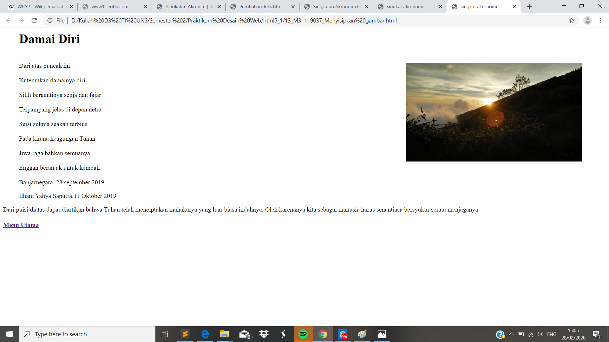

Menyisipkan Gambar
// Dalam pembuatan html tentu kita perlu menambahkan gambar pada html yang akan kita buat. Oleh karenanya penyisipan gambar dapat dilakukan dengan menggunakan perintah <img srd=""> dan ditutup dengan </img>. Untuk mengatur ukuran gambar kita dapat menggunakan <width=""> untuk lebar gambar, <height="">untuk panjang gambar, untuk mengatur jarak tepi dapat menggunakan <hspace=""> untuk horizontal dan <vspace=""> untuk vertikal. Sedangkan untuk <algn=""> digunakan untuk mengatur posisi gambar apakah ingin ditengah atau pinggir.
>
<!DOCKTYPE html>
<html>
<head>
<meta charset="UTF-8">
<title> singkat akronomi </title>
</head>
<body>
<blockquote cite ="https://www.puisipendek.net/puisi-alam">
<h1> Damai Diri </h2>

<p>
<br>Dari atas puncak ini</br>
<br>Kutemukan damainya diri</br>
<br>Silih bergantinya senja dan fajar</br>
<br>Terpampang jelas di depan netra</br>
<br>Seisi sukma seakan terbius</br>
<br>Pada kirana keagungan Tuhan</br>
<br>Jiwa raga bahkan semuanya</br>
<br>Enggan beranjak untuk kembali</br>
<br>Banjarnegara, 28 september 2019</br>
</blockquote>
<blockquote cite ="https://www.puisipendek.net/puisi-alam">
Ilham Yahya Saputra,11 Oktober 2019
</p>
</blockquote>
<p>
Dari puisi diatas dapat diartikan bahwa Tuhan telah menciptakan mahakarya yang luar biasa indahnya, Oleh karenanya kita sebagai manusia harus senantiasa bersyukur serata menjaganya.
</p>
<h4> <a href="index.html">Menu Utama </a> </h4>
</body>
Tampilan Hasil Percobaan

Kesimpulan
Pada percobaan kali ini kita dapat memasukkan gambar yang kita inginkan dengan kriteria yang kita inginkan juga. Dengan menggunakan perintah perintah <img srd=""> dan ditutup dengan </img>. Selain itu, kita juga dapat mengatur tampilan gambar seperti jarak, letak, keterangan dll.